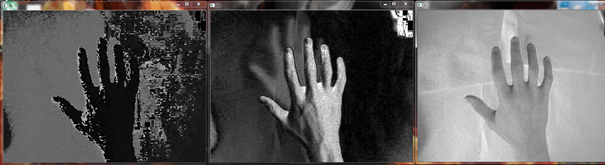
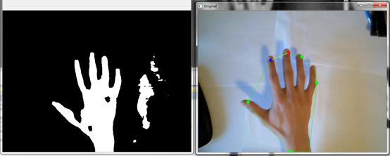
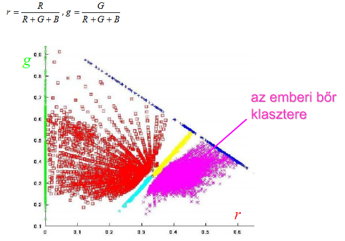
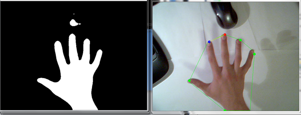
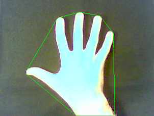

Szegmentálás
HSV szintéren alapuló szegmentálás
- RGB -> HSV szintér konverzió
- Intervallumos szegmentálást - hsv_min és hsv_max paraméterek vektorok
- Medián szűrés
- Eredmény:
2D normalizált színtéren alapuló szegmentálás
- RGB -> 2D normalizált szintér konverzió
- Eredmény:


H, S és V csatornák

Gyenge fényviszonyok

Jó fényviszonyok


RG szintérben történő szegmentálás (mesterséges fény mellett)

A szegmentált kép mediánszűrés után
Kontúr, konvex burok, ujjhegyek
cvFindContours() fgv. a kontúrok keresésére
cvContourArea() fgv. a kéz kontúr megtalálására
Konvex burok számítása - cvConvexHull2() fgv.
Ujjhegyek keresése - konvex burok töréspontjai/ritkítás


Konvex burok

Kurzor mozgása és kattintás
Mozgatás - SetCursorPos() fgv.
- szegmentált mutató ujj koordinátáinak megkeresése
- megtalált pont felskálázása a képernyőre
- apró remegés kiküszöbölése
Klikkelés - mouse_event() fgv.
- MOUSEEVENTF_LEFTDOWN - bal gomb lenyomva
- MOUSEEVENTF_LEFTUP - bal gomb felengedve
- MOUSEEVENTF_RIGHTDOWN - jobb gomb lenyomva
- MOUSEEVENTF_RIGHTUP - jobb gomb felengedve
Hiányosságok
- az egérkurzor mozgatásának pontossága
- webkamera felbontás - > képernyő felbontás felskálázás során a webkamera képe nem használható ki teljes terjedelmében
- kattintás során a kéz bemozdul
- jobb klikk kivitelezés